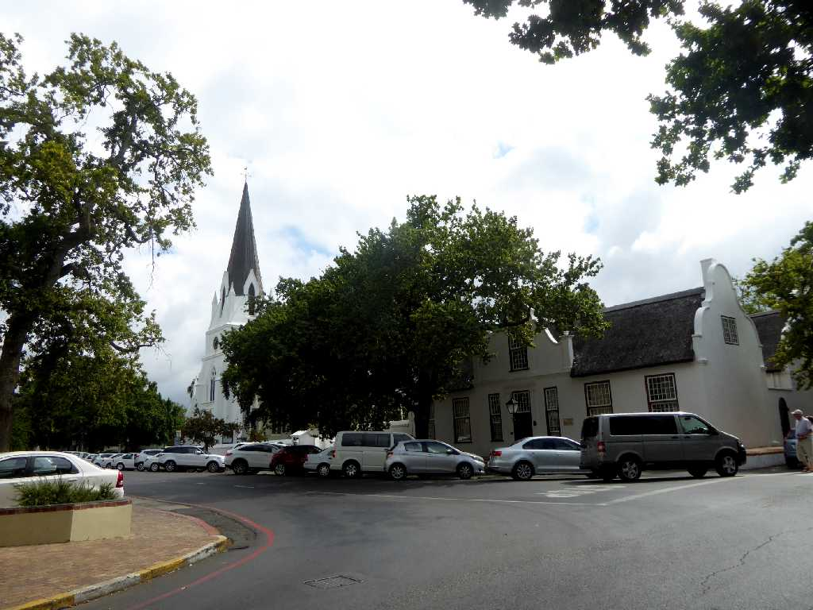
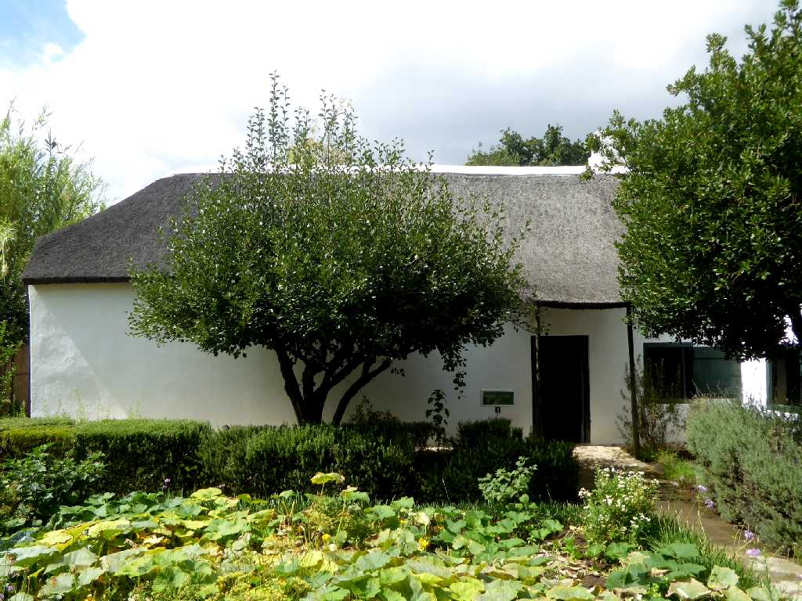
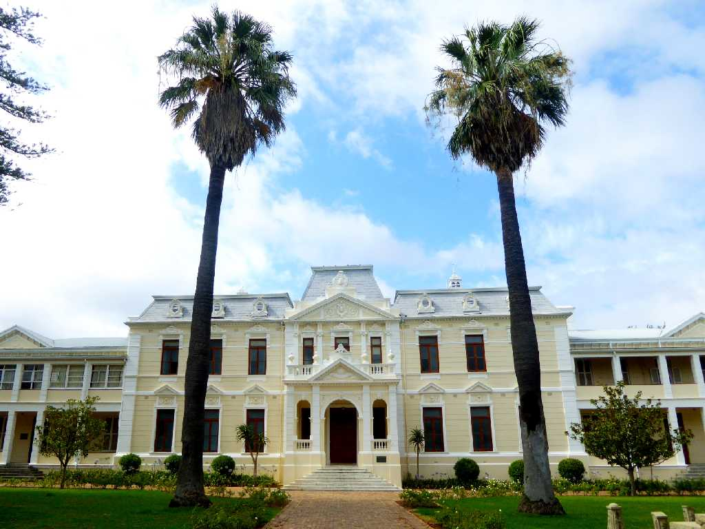
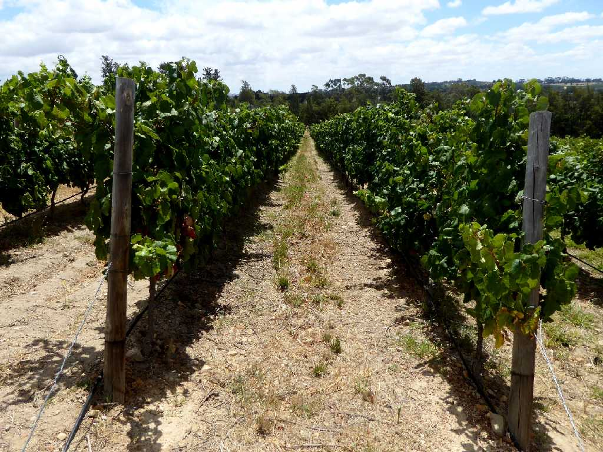
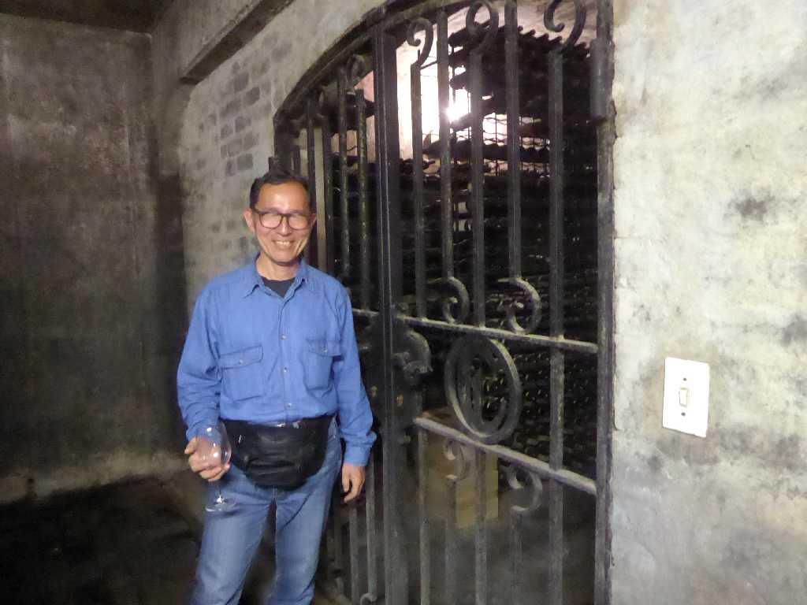
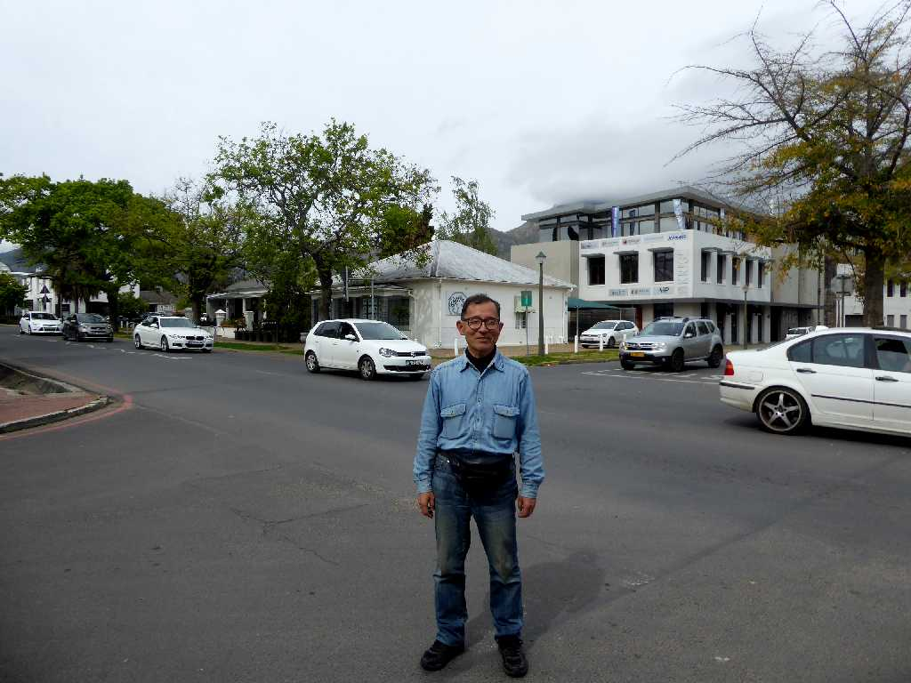
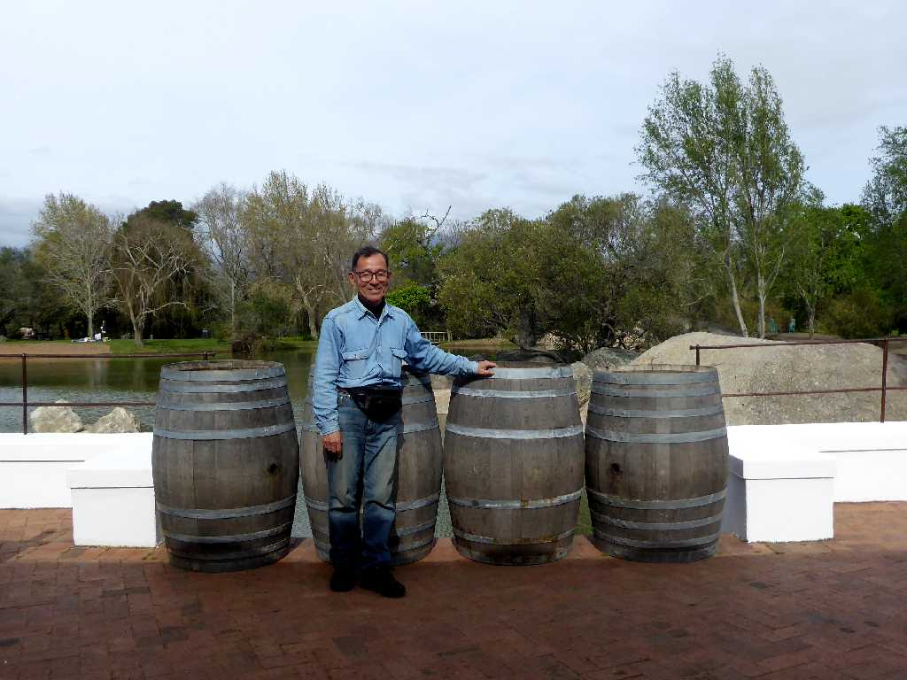
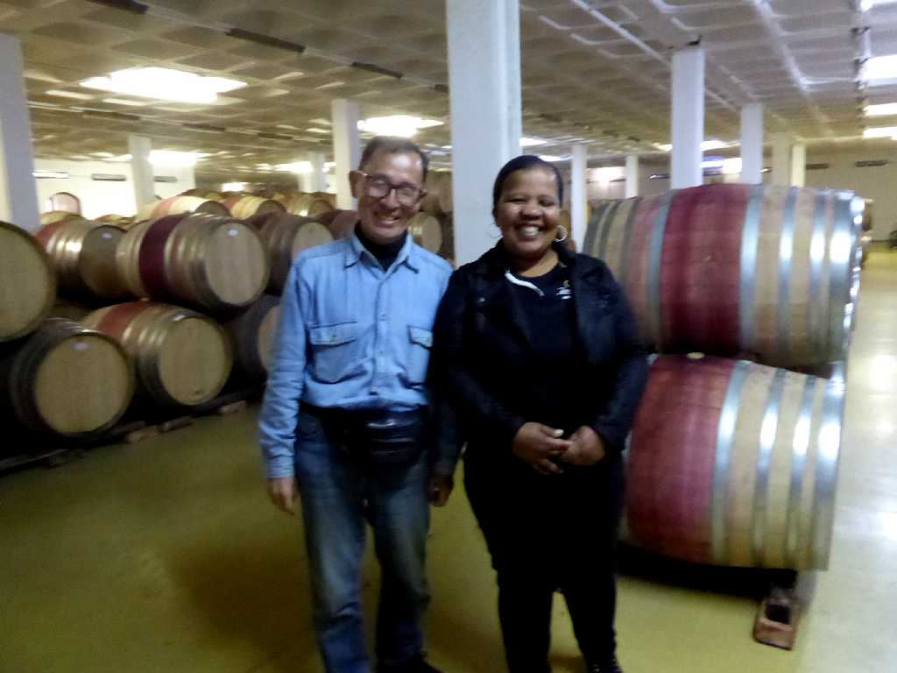

Stellenbosch

Village Museum Stellenbosch

University Stellenbosch
January 24 2016 Stellenbosch

Glen Carlou Winery Paarl

January 24 2016 Glen Carlou Winery

September 15 2018 Stellenbosch
世界一周の船旅以来２年半ぶりの再訪問

Spier Wine Tasting
２ヶ所のワインセラーで数種類のテイスティングを楽しむ

Zevenwacht Wine Estate